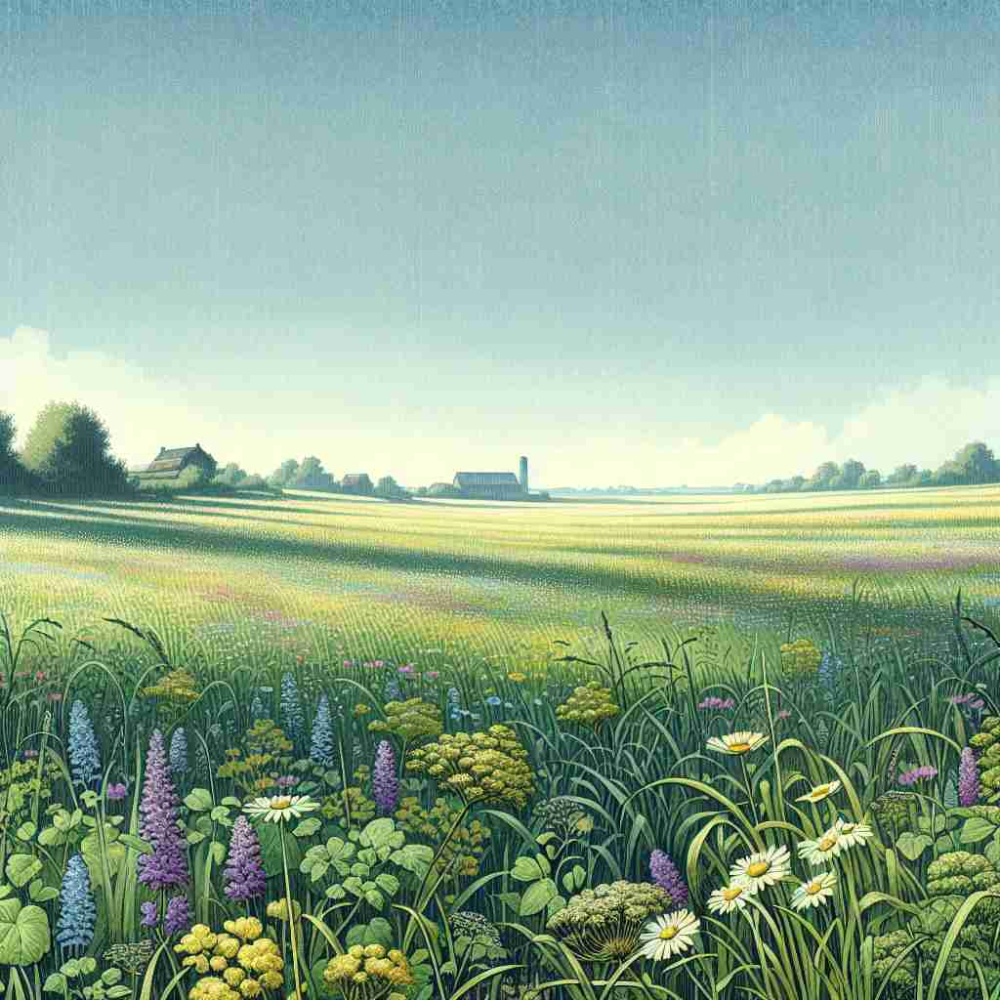

💬 The farmers are working hard in the field to gather the crops.

💬 The children love to play in the field after school.
💬 The butterflies are dancing over the flowering field.

💬 The children played in the open field full of flowers.
🔈 [fiːld]
🗝️ n. an area of open land, especially one used for growing crops or keeping animals
🖼️ 在一个乡村的边缘，一片辽阔的田地上，金黄色的麦浪随着风轻轻摇曳。远处，农民正忙着收割庄稼，几头牛悠闲地在一旁的草地上吃草。这个场景完美诠释了'field'作为农田或牧场的含义。
🔍 将'field'想象为一片开阔的土地。从具体的农田，到抽象的知识领域，再到竞争的场地，都可以类比为这片"土地"。无论是种植作物、进行活动、积累知识，还是展开竞争，都发生在这个'field'之上。这个核心概念贯穿了'field'的各种用法，帮助你更容易理解和记忆它的多重含义。
💬 The farmers are working hard in the field to gather the crops.
💬 The children love to play in the field after school.
💬 The butterflies are dancing over the flowering field.
💬 The children played in the open field full of flowers.
🌳 来源于古英语 “feld”，表示开阔的土地或农田。这是一个基本名词，用于描述开放空间、领域或专业领域等。
💡 记住 'field' 可以联想到 'open field' 的景象，即一片开阔的土地，这样在遇到不同领域时，如学术或工作领域，也能联想到它的广泛应用。
🗝️ n. an area of land or water where a particular activity takes place
🖼️ 在一座现代化的赛车场中，赛车手们紧张地准备着，而热情的观众在看台上欢呼。引擎的轰鸣声回荡在空气中，展示了'field'作为活动场地的含义。
💬 The team was warming up on the football field.
❓ 从农田扩展到其他活动场地
🗝️ n. a particular area of study or business
🖼️ 在一个大学讲堂中，教授正在白板上写下复杂的公式，学生们聚精会神地听讲。这是一堂关于量子物理的课程，场景体现了'field'作为研究领域的含义。
💬 She's an expert in the field of neuroscience.
❓ 比喻为知识或专业的"领域"
🗝️ n. all the participants in a contest or sport
🖼️ 在激烈的马拉松比赛中，运动员们在赛道上奋力奔跑，每个人都微微出汗，目光坚定。这个场景展示了'field'作为所有参赛选手的含义。
💬 He was ahead of the field in the marathon.
❓ 类比于在同一片"场地"上竞争的参与者
🗝️ n. a region where a particular condition prevails
🖼️ 在某个磁场实验室中，科学家们正小心翼翼地调整设备，以确保磁力线的稳定流动。这个场景生动地展示了'field'作为某种特定状态区域的含义。
💬 The Earth's magnetic field protects us from solar radiation.
❓ 延伸为抽象的区域概念
🗝️ v. to send people to work in a particular area
🖼️ 在繁忙的建筑工地上，工程经理指挥工人们进入不同的施工区域进行工作。这说明了'field'作为派遣人员到特定区域工作的动词用法。
💬 The company fielded its best sales representatives for the conference.
❓ 将人"放置"到特定的工作"领域"